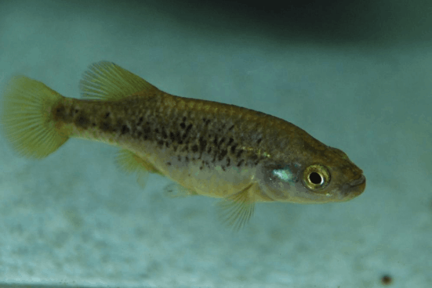

Systématique
- Ordre : Cyprinodontiformes
- Famille : Goodeidae
- Genre : Allotoca
- Espèce : A. diazi
- Auteur : Meek, 1902

Allotoca diazi est un poisson Goodeidé rare, originaire des systèmes lacustres du Mexique. Historiquement placé dans le genre Neoophorus, il est aujourd'hui classé au sein du genre Allotoca. Il présente un corps comprimé latéralement, plus haut que celui d'A. dugesii. Sa coloration est argentée avec des reflets bleutés ou verdâtres sur les flancs, parsemée de petites taches sombres irrégulières.
C'est l'un des plus grands représentants du genre, les femelles pouvant atteindre 8 à 9 cm, tandis que les mâles mesurent environ 6 cm. Sa tête est relativement pointue et sa bouche est orientée vers le haut, typique des poissons se nourrissant près de la surface ou dans la colonne d'eau moyenne.
Comme la plupart des membres de sa famille, Allotoca diazi est une espèce active mais au tempérament parfois ombrageux. Les mâles peuvent montrer une agressivité intra-spécifique marquée pour la domination et l'accès aux femelles. Il est préférable de les maintenir en groupe dans un volume conséquent pour diluer l'agressivité.
L'espèce est particulièrement sensible à la qualité de l'eau et ne tolère pas les environnements pollués ou excessivement chauds. En aquarium, il apprécie les zones de nage libre combinées à une végétation périphérique dense qui sécurise les individus dominés et les femelles gravides.
Mode : Vivipare matrotrophe.
La reproduction suit le schéma classique des Goodeinae : fécondation interne via l'andropode du mâle. La période de gestation est de 7 à 9 semaines. Les alevins naissent avec des trophotaeniae (extensions nutritives) qui tombent peu après la naissance.
Les portées sont proportionnelles à la taille de la femelle, pouvant aller de 20 à 50 alevins pour les spécimens matures. Les jeunes sont très grands à la naissance (environ 15 mm) et capables de consommer immédiatement des nauplies d'artémias ou de la nourriture fine. L'espèce est connue pour son cannibalisme envers les alevins, une séparation ou une plantation extrêmement dense est nécessaire pour assurer la survie du frai.
Dimorphisme sexuel : Le mâle est plus petit et possède un andropode (nageoire anale modifiée). Ses nageoires dorsale et anale sont souvent plus développées et colorées que celles de la femelle. La femelle est nettement plus massive, plus terne, et possède une nageoire anale normale de forme triangulaire.
Espérance de vie : 3 à 5 ans en aquarium, sous réserve d'un hivernage adéquat.
Allotoca diazi est endémique du bassin du lac Pátzcuaro, au Michoacán (Mexique). Il a également été recensé dans des sources et canaux adjacents. Son habitat est constitué d'eaux stagnantes ou à courant très lent, souvent riches en sédiments mais avec une chimie de l'eau stable.
Le milieu naturel est caractérisé par une eau tempérée-fraîche, variant selon l'altitude et la saison. La pollution urbaine et l'introduction d'espèces exotiques prédatrices (Achigan) ont provoqué un déclin dramatique de ses populations naturelles, rendant l'espèce extrêmement rare, voire éteinte dans certaines localités d'origine.
Répartition

Origine naturelle :
- Mexique : Endémique du Lac Pátzcuaro (État de Michoacán).
- Localité type : Lac Pátzcuaro, Michoacán, Mexique.
Considérée comme "En danger critique" par l'UICN. Les programmes de conservation ex-situ sont vitaux pour la survie de l'espèce.
Paramètres de maintenance
Température : 16 à 22 °C (Éviter impérativement les températures supérieures à 24 °C sur le long terme).
pH : 7,0 à 8,2 (eau alcaline).
GH : 10 à 25 °dGH (eau dure).
Courant : Faible.
Volume conseillé : 100 à 120 L pour maintenir un groupe de manière stable.
Régime alimentaire
Régime : Carnivore/Insectivore prédominant.
En aquarium, il montre une préférence marquée pour les proies vivantes ou surgelées (vers de vase, daphnies, larves de moustiques). Il accepte les aliments secs (granulés/paillettes) une fois acclimaté, mais un apport carné régulier est indispensable pour la reproduction et la santé.